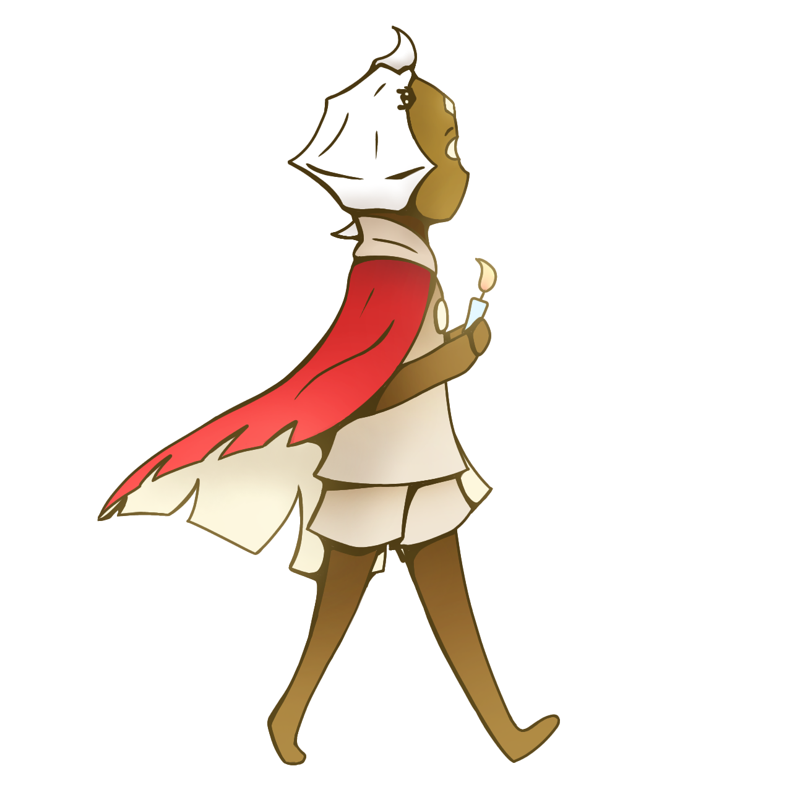

Animation

Animation, as it's defined, is the medium of moving images into a state of living images. There are several types of animation. Ranging from traditional hand drawn cell animation and its digital counter parts, to motion graphics, animation can be as complex or as simple as needed to fulfill its purpose. Complex animation like cartoons can tell a story and entertain the viewer, while simplistic animations can be used to enhance the viewer's experience or catch their attention.
This animation is simplistic in nature, however, it goes over a major component in all animation. That being the ease in which the animation takes place. Ease, in short terms, is the speed of movement in an animation over time. Duration is how long the animation takes place. In this new animation, the ease is different and even with the same image, the energy for each feels different as the duration of the animations differ from one another.